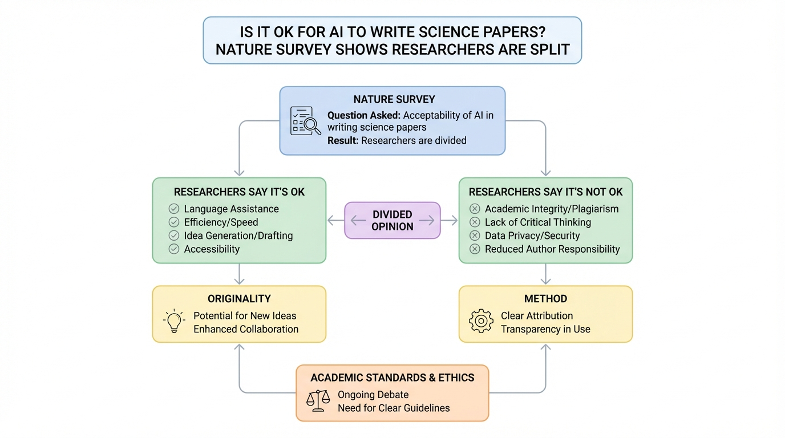

Figure 1
Nature가 전 세계 약 5,000명의 연구자를 대상으로 실시한 설문에서, 과학 논문 작성과 동료심사에 AI를 사용하는 것에 대한 윤리적 견해가 크게 갈리며, 대다수가 AI 사용에 호의적이면서도 실제 채택률은 낮고 공개(disclosure) 여부에 대한 합의가 부재함을 확인한 대규모 조사.
5,000명 이상의 글로벌 연구자를 대상으로 한 이 설문은, 학술 AI 사용에 대한 현재 학계의 분열된 인식 지형도를 가장 포괄적으로 그려낸 자료다. 특히 "편집은 괜찮지만 초안 작성은 논란, 결과 섹션은 금기"라는 세분화된 태도 패턴, 그리고 "호의적이지만 실제로는 안 씀"이라는 태도-행동 괴리는 학술 출판 정책 수립에 직접적으로 유용한 통찰이다. 다만, Nature News Feature의 성격상 통계적 엄밀성(신뢰구간, 다변량 분석 등)보다는 기술적 요약에 치중하며, 응답 편향과 중국 과소 대표 문제는 결과 해석 시 주의가 필요하다. 연구자들의 자유 응답에서 드러난 양극단의 목소리 -- "AI는 계산기와 같다" vs "AI 사용은 사기" -- 는 이 문제가 단순한 기술 채택을 넘어 과학의 정체성과 가치에 대한 근본적 논쟁임을 보여준다.
| 항목 | 점수 (1-5) |
|---|---|
| Novelty | 2 |
| Technical Soundness | 3 |
| Significance | 3 |
| Overall | 2.7 |
총평: 5,000명 연구자 설문을 통해 AI 과학 논문 작성에 대한 인식을 파악한 Nature 기사로, 광범위한 표본의 현황 데이터를 제공하지만 심층 분석이나 처방적 제언은 부족하다.